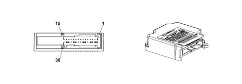
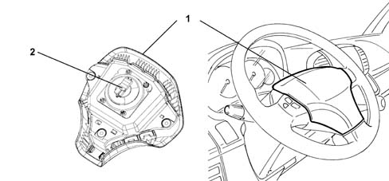
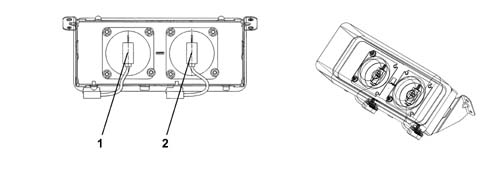
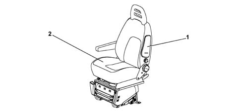
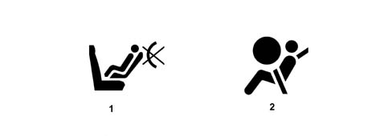

AIR BAG SYSTEM
- Path
- Descriptions > 55 ELECTRICAL EQUIPMENT > AIR BAG SYSTEM
- Kind
- system description
- Applies to
- all engines; all production periods
- Interactive page
- https://sloeber94.github.io/elrnDB-fDct/en/#/244000439
Applies to: all engines; all production periods
COMPOSITION
The vehicle is equipped with a frontal and side (optional) protection system which is activated following impacts of medium intensity to ensure the safety of the occupants of the front seats. To complete the safety system and to improve the restraint system the vehicle is also fitted with front seat belt pretensioners with load restricters. The control unit control system allwos the total or partial activation of the devices in the case of a frontal impact.
The (Breed) protection system comprises:
- 3 pretensioners, driver's, front side passenger and front centre passenger, respectively;
- A driver's Air Bag;
- A passenger Air Bag (with the task of protecting the front passenger and the centre front passenger);
- 2 side impact sensors (one on each side)
- A passenger Air Bag disabling switch
- 2 side Air Bags (side bags, one on each side)
Two pretensioners (driver and passenger) and a driver's Air Bag are fitted as standard on the vehicle.
The control unit manages the accumulation of energy for the front Air Bags and memorizes both the fault codes and the crash codes. The red coloured fault warning light in the instrument panel is the intelligent type.
The control unit does not have to be replaced if the pretensioners or the Side Bags are activated up to three times.
If the front Air Bags only are activated and when the pretensioners and/or side bags are activated for the third time, the control unit has to be replaced.
ELECTRONIC CONTROL UNIT

Front (24 way) connector PIN OUT table
1 | Earth |
|---|---|
2 | Not used |
3 | Not used |
4 | Not used |
5 | Crash output (not currently used on the Ducato) |
6 | Diagnostic serial line K |
7 | Passenger air bag disabled warning light (where fitted) |
8 | Bulb failure |
9 | Not used |
10 | Switch for disabling passenger Air Bag (-) (where fitted) |
11 | Switch for disabling passenger Air Bag (+) (where fitted) |
12 | Supply from ignition (+15) |
13 | Not used |
14 | Not used |
15 | Not used |
16 | Not used |
17 | passenger air bag 2nd stage (+) |
18 | passenger air bag 2nd stage (-) |
19 | Not used |
20 | Not used |
21 | passenger air bag 1st stage (+) |
22 | passenger air bag 1st stage (-) |
23 | Driver's air bag (+) |
24 | Driver's air bag (-) |
Rear (32 way) connector PIN OUT table
1 | Driver's pretensioner (-) |
|---|---|
2 | Driver's pretensioner (+) |
3 | Passenger pretensioner (-) |
4 | Passenger pretensioner (+) |
5 | Driver's side bag or centre pretensioner (-) |
6 | Driver's side bag or centre pretensioner (+) |
7 | Not used |
8 | Not used |
9 | Passenger side bag (-) |
10 | Passenger side bag (+) |
11 | Not used |
12 | Not used |
13 | Not used |
14 | Not used |
15 | Not used |
16 | Not used |
17 | Earth |
18 | Not used |
19 | Not used |
20 | Not used |
21 | Not used |
22 | Not used |
23 | Not used |
24 | Driver's side sensor: Supply + communication |
25 | Passenger side sensor: Supply + communication |
26 | Driver's side sensor: Earth |
27 | Passenger side sensor: Earth |
28 | Not used |
29 | Not used |
30 | Not used |
31 | Not used |
32 | Earth |
Specifications
The electronic control unit manages the entire system and controls all its components. It is designed to recognise an impact situation in plenty of time to activate the pretensioners alone or the pretensioners plus the air bag modules according to impact severity and type.
The control unit is rigidly secured to the body beneath the central car consule near the centre of gravity. This location allows interior deceleration sensors to detect car deceleration with accuracy.
Composition
The control unit contains two deceleration sensors, one electronic and one electromechanical safety sensor that activates an activation enablement function independently of the electronic sensor.
If the car deceleration level detected by the electronic sensor and processed by the ECU in terms of impact severity, exceeds the severity level set for the device deactivation control, the control unit allows the command to be sent only if the safety sensor is closed at the same moment.
The following functions are present to ensure the system is correctly managed:
- energy accumulation: the control unit is supplied at 12V with the key ON but can still operate for a few fractions of a second if the power supply is cut off or experiences a voltage drop in order to safeguard system operation and write the data in the crash memory.
- check earth fastening: the control unit software checks the electrical contact between body and control unit;
- fault memory: with the key ON, the control unit continuously monitors circuit operation (including energy reserve circuits) during normal vehicle operation and impacts. It also diagnoses all electrical parts of the system and indicates the presence of faults by turning on an airbag system fault warning light on the instrument panel and saving the fault code.
- crash memory: records information on crash events that trigger activation of the pretensioners and front or side modules.
DRIVER'S AIR BAG MODULE

- 1 - Casing
- 2 - Connector
The driver side air bag is a passive safety device. It takes the form of a bag that inflates automatically in the case of frontal impact to interpose itself between the driver's body and front passenger compartment structures. The Air Bag module is fitted in the centre of the steering wheel.
The module comprises:
- a plastic cover that tears at preset points when activated to allow the bag to expand correctly.
- a bag which has a volume of around 60 litres
- a pyrotechnic type gas generator
- a containment case.
Operation
The module gas inflation generator is electrically activated by means of a signal from the electronic control module. Following this signal a pyrotechnic charge housed in the generator is primed. The gases produced by the combustion of the charge flow through special openings and expand in the bag causing the cover to break at specified points. When fully inflated, the bag is in an optimal position to protect the occupant. After the bag is inflated by the gases it immediately deflates thanks to the presence of suitably located breather openings.
PASSENGER AIR BAG

- 1 - Left connection point
- 2 - Right connection point
Operation
The passenger Air Bag is located in the dashboard and is designed to protect the two front pasengers.
It consists of a module comprising two gas generators that have the task of inflating a very large single bag (about 120 litres) whose shape is designed to protect the occupants of both the centre and side seats. This solution allows the optimum protection of both occupants.
The composition and operation are the same as for the driver's Air Bag, with with two gas generators in place of the single one for the driver's air bag fitted in the steering wheel.
A plastic flap that is incorporated in the dashboard allows the bag to escape as it inflates in the direction of the driver.
SATELLITE SENSOR SIDE BAG SYSTEM

- 1. Side Bag casing
- 2. Driver's seat
Operation
The Side Bag modules are fitted in the door side front seat backrests.
To ensure maximum front seat occupant safety in the case of side impact, side bag modules are installed on the seat squabs. They are fitted on the side facing the outside of the car beneath the trim.
This configuration is considered one of the most effective because it ensures the airbag is always in optimum position in relation to the occupant regardless of seat setting or occupant size.
The side bag mainly protects the chest and abdomen, even if the seat occupant is not sitting properly because bag opening dynamics minimise the risk of body damage caused by impact with the airbag.
The side bag module consists of a plastic container that houses the gas generator and a permeable nylon bag.
The module container includes a cover with preset break points. When the seat cover is fitted, the exterior of the trim in the area over the bags includes seams designed to yield easily.
The connection between the module and the electrical system takes place by means of two cables with a yellow outer casing housed together with the connecting cable. The module inflation gas generator is electrically activated by a signal coming from the electronic control unit. The signal is managed by satellite sensors, located in the centre pillars, which detect direct impact acceleration along the transverse axis of the vehicle and send it to the control unit. Following this signal, a pyrotechnic activation is set off that causes the gas in the generator to expand and inflate the bag.
The increase in bag volume breaks the container in the set areas and causes the squab cover seams to yield along the preset sections to allow the bag to emerge correctly. When fully inflated, the bag is in an optimal position to protect the occupant. The bag deflates immediately after being inflated by the gas because the fabric is permeable.
CLOCK SPRING
The clock spring is a device that allows the leads connecting the air bag module and the other electrical controls installed on the steering wheel to follow steering wheel rotation without danger of breaking.
The clock spring has two cables on the steering wheel side with one designed to connect the Air Bag module and one for connecting the steering wheel electrical functions.
Operation
Inside the two plates, the leads connecting the air bag module are wound into a spiral with sufficient coils to follow the steering wheel rotations. The upper plate is turned by fasteners on the inside of the retaining ring that fit into the seat on the steering wheel hub. In working position, the steering wheel presses on the ring to release it from its fasteners and thus allow both plates to turn freely. When the steering wheel is removed, the spring-loaded ring locks rotation between both plates. This function prevents the upper plate, now no longer secured to the steering wheel, from turning freely and unwinding or winding the coil inside the device and possibly causing it to break.
The following must be observed during operations that require removal of the steering wheel and device.
- always work with the car's wheels aligned straight ahead.
- lock the cable, for safety reasons, using a band before removing it from the steering column switch unit.
SEAT BELT PRETENSIONERS
The pretensioners are pyrotechnic devices that are activated electrically by means of a signal from the electronic control unit. They are built into the reel of the front and rear side seat belts.
When the pretensioners cut in following frontal impact above a certain threshold, the seat belt straps are retracted to hold the occupant as closely as possible against the seat squab.
Operation
When the car decelerates to a sufficient extent, the electronic sensor in the electronic control unit sends a signal to trigger the gas generator pyrotechnic charges (5). Combustion of propellent (6) develops a chemical reaction that produces inert gas. Gas pressure then generates a force that pushes the piston rack upward (4). The rack turns a toothed wheel (1) connected to toothed wheel (2). This meshes with toothed bush (3) to change the rotary motion of the chuck so that it turns in the opposite direction to the direction which the belt unwinds and rewinds the belt by a few centimetres.
AIR BAG SYSTEM FAILURE WARNING LIGHT AND PASSENGER AIR BAG DISABLED WARNING LIGHT

- 1 - Passenger Air Bag disabled warning light
- 2 - Air Bag failure warning light
Fault warning light
The operation of the Air Bag system failure warning light is known as intelligent because it is also capable of signalling a faulty connection with the control unit.
At key ON, the fault warning light (red) comes on for about four seconds (initial self-diagnosis stage) and then goes off. If the control unit detects a fault in the warning light, it memorizes the corresponding fault code. After the four seconds of the self-diagnosis stage, if the system does not detect any errors, the warning light goes out; if errors are detected, it remains on until the ignition is next switched off.
The warning light stays or comes on durng normal car operation in the following cases:
- the control unit detects a fault in the airbag system;
- the control unit detects a crash with system activation;
- when a fault is detected in the warning light connection circuit.
As a consequence of a crash when the pretensioners or sidebags alone are activated, the warning light stays on until system operating conditions are restoered (replacement of affected part or control unit repair using an EXAMINER)
If the crash causes the front airbag modules to activate, the warning light stays on permanently because the control unit cannot reset (in this case the control unit must be replaced).
If internal operating errors occur during the operational lifetime of the control unit that cannot be repaired during the EXAMINER, this are indicated by permanent activation of the warning light.
Passenger front AIR BAG disabled warning light
With the key ON, the yellow passenger side air bag disabled warning light comes on for about four seconds (initial self-diagnosis stage). If the control unit detects a fault in the warning light, it saves the fault code, turns on the fault warning light and maintains the passenger side airbag module disabled. System operation is restored by means of an EXAMINER as with the fault warning light.
Once the initial self-diagnostic stage of 4 seconds has elapsed, if the key-operated disablement switch is turned OFF, the warning light stays on to indicate that the passenger module is disabled. If no faults are present, the warning light flashes for another four seconds and then goes off to indicate that the passenger module is enabled.